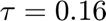

Abgabe des ersten Programmierblatts von Sven Ullmann (3467077) und Thomas Stegmeyer (3401787)
Contents
Aufgabe 1
Definition einiger numerischer Verfahrung zur approximation von DGLs
Das explizite Verfahren von Euler
type 'explicit_euler.m'
function Y = explicit_euler(f, y_0, T, tau)
K = round(T/tau); %Anzahl an Zeitschritten
d = size(y_0); %Dimension des Startvektors und damit auch die der Lösung
d = d(2);
Y = zeros(d,K+1); %Initialisieren Matrix, in welcher alles Lösungsvektoren gespeichert werden
Y(:,1) = y_0; %Startwert y_0 zur Lösungmatrix hinzufügen
%Durchführen des Euler Schritts
for i=0:K-1
Y(:,i+1) = Y(:,i) + tau*f(tau*i,Y(:,i));
end
end
Das explizite Verfahren von Heun
type 'explicit_heun.m'
function Y = explicit_heun(f, y_0, T, tau)
K = round(T/tau); %Anzahl Zeitschritte
d = size(y_0); %Dimension des Eingabevektors
d = d(2);
Y = zeros(d,K+1); %Initialisiere leere Matrix, um alle Lösungsvektoren zu speichern
Y(:,1) = y_0; %Speichern des ersten Lösungsvektors
%Durchführen des Heun Verfahrens
for i=0:K-1
g0 = f(tau*i, Y(:,i));
g1 = f(tau*(i+1), Y(:,i) + tau*f(tau*i, Y(:,i)));
Y(:,i+1) = Y(:,i) + (tau/2)*(g0 + g1);
end
end
Das explizite Runge Kutta Verfahren dritter Ordnung
type 'explicit_runge_kutta3.m'
function Y = explicit_runge_kutta3(f, y_0, T, tau)
A = [0 0 0; 0.5 0 0; -1 2 0];
b = [0 1/2 1];
c = [1/6 2/3 1/6];
K = round(T/tau); %Anzahl Zeitschritte
d = size(y_0); %Dimension des Eingabevektors
d = d(2);
Y = zeros(d,K+1); %Initialisiere leere Matrix, um alle Lösungsvektoren zu speichern
Y(:,1) = y_0; %Speichern des ersten Lösungsvektors
s = size(b);
s = s(2);
V = zeros(d,s);
for k=1:K
V(:,1) = Y(:,k);
for i = 2:s
for j=1:i-1
sum1 = A(i,j)*f(tau*k + c(j)*tau,V(:,j));
end
V(:,i+1) = Y(:,k) + tau*sum1;
end
for j=1:s
sum2 = b(j)*f(tau*k + c(j)*tau, V(:,j));
end
Y(:,k+1) = Y(:,k) + tau*sum2;
end
end
Aufgabe 2
Diese Aufgabe löst die DGL des Räuber Beute Modells
type 'RauberBeuteModell'
function f = RauberBeuteModell(~,y)
f = zeros(2,1);
%Parameter
alpha = 1;
beta = 1;
gamma = 1;
delta = 1;
%Die Modellgleichungen
f(1) = (alpha - beta*y(2))*y(1);
f(2) = ( - gamma + delta*y(1))*y(2);
end
Definiere Endzeit, Zeitschritte, Startvektor und Gitter fürs Vektorfeld
T = 20;
tau = [0.64, 0.32, 0.16, 0.08 0.04];
y0 = [0.5, 0.5];
meshstep = 0.5;
axisRange = 5;
steps = axisRange/meshstep + 1;
F = zeros(steps,steps,2);
[x,y] = meshgrid(0:meshstep:axisRange, 0:meshstep:axisRange); %Gitter für Vektorfeld
Für die 2 größten Zeitschritte divergiert das Verfahren von Euler in der ersten Iteration. Deshalb werden diese getrennt geplottet.
for k=1:2
% Lösung DGL mit allen drei Verfahren
K = round(T/tau(k));
sol_euler = explicit_euler(@RauberBeuteModell, y0, T, tau(k));
sol_heun = explicit_heun(@RauberBeuteModell, y0, T, tau(k));
sol_rk3 = explicit_runge_kutta3(@RauberBeuteModell, y0, T, tau(k));
Index in position 2 is invalid. Array indices must be positive integers or logical values.
Error in explicit_euler (line 11)
Y(:,i+1) = Y(:,i) + tau*f(tau*i,Y(:,i));
Error in AbgabePblatt01_Ullmann_Stegmeyer (line 63)
sol_euler = explicit_euler(@RauberBeuteModell, y0, T, tau(k));
% Berechne das Vektorfeld for i=0:steps-1 for j = 0:steps-1 F(i+1,j+1,:) = RauberBeuteModell(0,[meshstep*i,meshstep*j]); end end
plot des Vektorfeld und der Lösungskurve für Euler
figure
hold on
quiver(x,y,F(:,:,1).',F(:,:,2).')
plot(sol_euler(1,:), sol_euler(2,:))
xlabel('Beute')
ylabel('Räuber')
legend('Vektorfeld', 'Euler')
title("Timestep: " + tau(k)+ " seconds");
hold off
plot der Lösungskurven über die Zeit, berechnet mit Euler
figure
time = linspace(0,T,K+1);
plot(time, sol_euler(1,:))
hold on
plot(time, sol_euler(2,:))
legend('Beute Euler', 'Rauber Euler')
xlabel('Zeit')
ylabel('Bestand')
title("Räuber-Beute Zeitverlauf, Zeitschritt: " + tau(k) + " seconds")
hold off
plot des Vektorfeld und der Lösungskurven für Heun und RK3
figure
hold on
quiver(x,y,F(:,:,1).',F(:,:,2).')
plot(sol_heun(1,:), sol_heun(2,:), 'g')
plot(sol_rk3(1,:), sol_rk3(2,:))
xlabel('Beute')
ylabel('Räuber')
legend('Vektorfeld', 'Heun', 'RK3')
title("Timestep: " + tau(k)+ " seconds");
hold off
plot des Beute und Räuber Verlaufs jeweils über die Zeit, berechnet mit Heun und RK3
figure
time = linspace(0,T,K+1);
plot(time, sol_heun(1,:), 'g')
hold on
plot(time, sol_heun(2,:), 'b')
plot(time, sol_rk3(1,:), 'r')
plot(time, sol_rk3(2,:), 'k')
legend('Beute Heun', 'Rauber Heun', 'Beute RK3', 'Rauber RK3')
xlabel('Zeit')
ylabel('Bestand')
title("Räuber-Beute Zeitverlauf, Zeitschritt: " + tau(k) + " seconds")
hold off
end
Schleife über Zeitschritte ab  und kleiner für alle 3 Verfahren
for k=3:length(tau)
% Lösung DGL mit allen drei Verfahren K = round(T/tau(k)); sol_euler = explicit_euler(@RauberBeuteModell, y0, T, tau(k)); sol_heun = explicit_heun(@RauberBeuteModell, y0, T, tau(k)); sol_rk3 = explicit_runge_kutta3(@RauberBeuteModell, y0, T, tau(k)); % Berechne das Vektorfeld for i=0:steps-1 for j = 0:steps-1 F(i+1,j+1,:) = RauberBeuteModell(0,[meshstep*i,meshstep*j]); end end
plot des Vektorfeld und der Lösungskurven
figure
hold on
quiver(x,y,F(:,:,1).',F(:,:,2).')
plot(sol_euler(1,:), sol_euler(2,:), 'k')
plot(sol_heun(1,:), sol_heun(2,:), 'g')
plot(sol_rk3(1,:), sol_rk3(2,:))
xlabel('Beute')
ylabel('Räuber')
legend('Vektorfeld', 'Euler', 'Heun', 'RK3')
title("Timestep: " + tau(k)+ " seconds");
hold off
plot des Beute und Räuber Verlaufs jeweils über die Zeit
figure
time = linspace(0,T,K+1);
plot(time,sol_euler(1,:), 'k')
hold on
plot(time, sol_euler(2,:), 'b')
plot(time, sol_heun(1,:), 'g')
plot(time, sol_heun(2,:), 'm')
plot(time, sol_rk3(1,:), 'r')
plot(time, sol_rk3(2,:))
legend('Beute Euler','Rauber Euler', 'Beute Heun', 'Rauber Heun', 'Beute RK3', 'Rauber RK3')
xlabel('Zeit')
ylabel('Bestand')
title("Räuber-Beute Zeitverlauf, Zeitschritt: " + tau(k) + " seconds")
hold off
end
c) Was stellt man fest? Euler diviergiert für die zwei größten Zeitschrittweiten sehr schnell. Euler zeigt wachsenden Kreise (wie in VL gezeigt) Heun und RK3 sind geschlossene Kreise für genügend kleine Zeitschrittweiten, also wesentlich besser als Euler! Die Erkenntnisse stimmen auch mit den besseren Konsistenzordnungen von Heun und RK3 überein.
Aufgabe 3
Für Aufgabe 3 lösen wir die logistische DGL
type 'funcLogisticDGL.m'
Definiere Zeitschritte, Parameter und Startwerte
tau_c = 1/80 * [1, 1/2, 1/8, 1/16, 1/32, 1/64, 1/128, 1/258, 1/512]; t_0 = 0; T = 1; alpha = 10; beta = 1; Xi = alpha / beta; p_0 = 1;
Initialisere leere Arrays um Fehler und Zeit zu speichern
cpuTime_euler = zeros(1,length(tau_c)); cpuTime_heun = zeros(1,length(tau_c)); cpuTime_rk3 = zeros(1,length(tau_c)); maxErrors_euler = zeros(1,length(tau_c)); maxErrors_heun = zeros(1,length(tau_c)); maxErrors_rk3 = zeros(1,length(tau_c));
Die exakte Lösung
AnalyticSol = @(t) Xi*p_0/(p_0 + (Xi - p_0)*exp(-alpha*(t - t_0)));
Schleife über alle Zeitschritte, berechne jeweils maxError und CPUTime
for i=1:length(tau_c) K = round(T/tau_c(i)); % Initialisere und fülle Array, um die analytische Lösung zu speichern AnalyticSolVal = zeros(1,K+1); for j=1:K+1 AnalyticSolVal(j) = AnalyticSol(tau_c(i)*(j-1)); end % Führe die Zeitmessung durch tic; sol_euler = explicit_euler(@funcLogisticDGL, p_0, T, tau_c(i)); cpuTime_euler(i) = toc; tic; sol_heun = explicit_heun(@funcLogisticDGL, p_0, T, tau_c(i)); cpuTime_heun(i) = toc; tic; sol_rk3 = explicit_runge_kutta3(@funcLogisticDGL, p_0, T, tau_c(i)); cpuTime_rk3(i) = toc; % Berechne die Fehler zu jedem Zeitpunkt und bestimme das Maximum errors_euler = zeros(1,K+1); errors_heun = zeros(1,K+1); errors_rk3 = zeros(1,K+1); for j=1:K+1 errors_euler(j) = abs(AnalyticSolVal(j) - sol_euler(j)); errors_heun(j) = abs(AnalyticSolVal(j) - sol_heun(j)); errors_rk3(j) = abs(AnalyticSolVal(j) - sol_rk3(j)); end %größten Fehler finden maxErrors_euler(i) = max(errors_euler); maxErrors_heun(i) = max(errors_heun); maxErrors_rk3(i) = max(errors_rk3); end
plot maxError over timestep for all three methods
figure loglog(tau_c,maxErrors_euler, '-o') hold on loglog(tau_c,maxErrors_heun, '-o') loglog(tau_c,maxErrors_rk3, '-o') xlabel('timestep') ylabel('error') legend('Euler', 'Heun', 'RK3') title('error to analytic solution over timestep') hold off
plot MaxError over CPU Time for all three methods
figure semilogy(cpuTime_euler, maxErrors_euler, '-o') hold on semilogy(cpuTime_heun, maxErrors_heun, '-o') semilogy(cpuTime_rk3, maxErrors_rk3, '-o') xlabel('cpuTime') ylabel('error') legend('Euler', 'Heun', 'RK3') title('error to analytical solution over cpu runtime') hold off
d) Interpretation der Ergebnisse Mit größeren Zeitschrittweite wird Fehler zur analytischen Lösung bei allen 3 Verfahren größer. Rk3 besser als Heun besser als Euler Euler ist am schnellsten, macht aber auch den größten Fehler. Heun und RK3 sind selber Laufzeit wie Euler deutlich besser im Fehler. Heun und RK3 unterscheiden sind kaum beim CpuTime über Laufzeit plot.